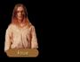

| ZONE 2 - Chapters 1, 2, 3, and 6 |
[QUESTOR'S VIEW] [SARTH] [SUNG] [SILBAN] [EGGLEY] [TANNEURS] [KRONDOR]
| QUESTOR'S VIEW AREA |
| ROAD NW OF QUESTOR'S VIEW: Exit to Zone 1 (Zun) |
The road was littered with rocks.Instinctively he knew that they had simply fallen from the sides of the rocky defile which now faced them, but a part of him entertained the notion that perhaps they had fallen onto the roadbed when someone had scrambled up the cliffs to await their party...
"If we head to the north, there's always the possibility the moredhel will have more assassins waiting for us," Locklear said. "Do we risk it?"
YES:
Days passed.
Disliking the exposed feeling created by the defile, they moved quickly during the nights and left the days to resting under rocky overhangs and listening for assassins' footsteps. At last, foot sore and road weary, they emerged near the town of Zun.
| CHANTY'S FIRST HOUSE (Chapter 1) |
| FIRST VISIT | SECOND VISIT |
|
The man who greeted them at the door smelled of fish.
"Folks call me Chanty," he said after Owyn introduced himself. After a few more minutes of friendly conversation he revealed he was a fisherman, but he hadn't been out on his boat for several days due to his health. As he spoke he threw dark looks at an unseen thing over Owyn's shoulder. Owyn was about to ask him another question when Chanty suddenly mumbled something angrily and slammed the door closed. No amount of coaxing could convince him to open it again. |
The door remained closed. "Go away," shouted a voice from the inside. "Just leave me alone" Locklear shrugged his shoulders and motioned that he was ready to leave. |
| CHANTY'S FIRST HOUSE (Chapter 2) |
The small house was abandoned.James shook his head slowly, then turned and said, "I had hoped we might find the fisherman Chanty here, but he has apparently taken up residence elsewhere."
| CHANTY'S SECOND HOUSE (Chapter 2) |
| FIRST VISIT | SECOND VISIT |
|
"Have you seen my gold?" asked the man at the door. "I'm afraid we haven't," said James. "Aren't you Chanty the fisherman?" he questioned. "Yes, but I didn't mean to do it," he replied wildly. "I was looking for my gold, I didn't know it was still...alive." He shivered involuntarily. James looked at Owyn, then continued, playing along though he wasn't sure what the man was talking about. "But you did do it. Why don't you tell us about it?" Shaking harder, Chanty said, "It was a black thing...I dug and dug...then it grabbed my arm and I pulled away but it wouldn't let go and then it clawed its way out...and it talked to me. The demon thing spoke to me and...and...thanked me for letting it go." He stopped, nearly in tears. "It even gave me a reward. It gave me passwords for a couple of the local fairy chests. Said they were: EYES and RING." Unable to control his fear any longer, he retreated into his house, slamming the door. |
The door remained closed. "Go away," shouted a voice from the inside. "Just leave me alone" James shrugged his shoulders and motioned that he was ready to leave. |
| INVALID CHANTY DIALOGUE? |
A man answered Owyn's's knock. His face was flushed and there were beads of sweat on his brow that threatened to race each other down his face at any moment. He was breathing heavily."You've come about them, haven't you?" he asked, wide eyed. "Well?"
After several long minutes of careful probing, Owyn was able to ascertain that the man believed he had released some evil spirits from a couple of the local graveyards. The more he spoke of his dealings with the undead the more frightened he became, until at last, shivering violently, he closed the door and retreated back into the relative safety of his house.
| CHANTY'S TOMBSTONE |
WARNING!
The fiend beneath this stone is trapped by dirt, not by death. Stay away!
| CHAPTER 1 | CHAPTER 2 |
|
Turning to Gorath, Locklear said, "Shall we dig up this grave?" YES (no Shovel): After a brief discussion with Locklear, Gorath shook his head. "I'm not too comfortable with the idea of accidentally digging up dead people! Besides, we need a shovel. We'd ruin our swords digging." YES (Shovel): The ground was too hard. Wiping the sweat from his brow, Locklear threw up his hands in frustration. "Feels like someone intentionally packed this down," he said. "Probably the family was afraid of grave robbers."
|
James looked at the mound of dirt. He bent down and examined it more closely, then
stood, a disgusted look on his face. JAMES: "Someone has clawed this grave opened. They didn't use tools, it would appear they dug it open with their bare hands." GORATH: "A wild animal perhaps. Hungry wolves have been known to dig at shallow graves if the scent is strong enough." JAMES: "No. I'm afraid not. There is some dried blood in the dirt...and I found several human fingernails, no doubt lost as someone dug frantically at the hard ground!"
|
| SHOP NW OF QUESTOR'S VIEW: RYGATE & SUPPLY |
The lay of the goods store was comfortably familiar, arranged in such a common sense fashion that it took only a few moments for Locklear to locate the items which interested him.
| SHOP NE OF QUESTOR'S VIEW: MORGAN HURLEY'S |
Everywhere Locklear looked, polished metal gleamed. As much a temple to war as any Temple of Tith, the cramped shop offered a startling variety of weapons and armor.
| QUESTOR'S VIEW SHOP: PIERCE PERRY'S WEAPONS |
Everywhere Locklear looked, polished metal gleamed. As much a temple to war as any Temple of Tith, the cramped shop offered a startling variety of weapons and armor.
| QUESTOR'S VIEW INN: BABON'S HOSTEL |
Conversation within the room halted briefly as Locklear pushed his way inside the room, returning a nod from a rough looking pair of mercenaries who otherwise seemed engaged in a dispute over a lost bet.
| GRIMM DIALOGUES |
The man didn't look happy."He don't talk much," called a voice from the other side of the tavern. "He's a pretty somber fellow. Folks call him Grimm 'cuz he never laughs or smiles." Another voice said, "He's pretty much a fixture here at Babon's. In fact, we often have a little fun with strangers. We'll give you 80 sovereigns if you can get Grimm here to laugh. Care to give it a try?"
YES:
James nodded. "Indeed we would like to give it a try," he said, then turning whispered, "Let's see...how are we going to get this fellow to laugh?"
[SPOON]
"I've got it," said Owyn. "This is a little trick I used to amuse my father with."
He squatted down in front of Grimm, tipped back his head and began to sing. As the words to the silly song tumbled from his mouth he carefully balanced a spoon across the bridge of his nose.
Grimm frowned.
[BAWDY]
"I'll try," said Gorath. He turned to Grimm and with a sly smile began a bawdy tale detailing a romantic tryst between a dwarf and an elf maiden. Glancing around the room with a mischievous smile Gorath reached the punch line, "'It just in'a gonna work, said the dwarf, 'What with me down here and you up there.'"
The end of the story brought stifled snorts and snickers from around the room, but Grimm simply nodded.
[SHIP]
James stepped forward.
"This little tale should knock him out of his chair. It was related to me by a Tsurani soldier. Seems one of their sailing ships was caught in a fierce storm that damaged the vessel so badly it began to take on water. There were rafts on board and most of the men got off safely, but it quickly became apparent to the captain that there were only three spots left and four of them still on the ship.
'I'm going to ask each of you a question,' he said. 'Answer correctly and you can join your mates on the raft.' Turning to the first man he asked, 'The Fire Storm sunk off what peninsula?'.'The Honshoni peninsula, sir.' The captain nodded and pushed the sailor toward the raft. Then he turned to the second man. 'How many were aboard that night?' Deep in thought the second sailor finally blurted, '154!' Again, the captain nodded, pushing the sailor toward the raft. Finally, with one eye on the rising water, he turned to third man. 'What were their names?' The joke over, Owyn looked at Grimm expectantly as loud guffaws filled the room and men doubled over and slapped their knees and lost ale through their noses.
Grimm yawned.
[CANCEL]
"The man's a rock," complained James. "I'm afraid we just can't do it."
[SUMANI]
Owyn looked thoughtful.
"Sumani told us a joke, does anyone remember it?" His question received nothing but blank stares. "Let's see if I can remember this story," he said to Grimm. "During the reign of the Hidjacumo - "
"Hidjucama," corrected Grimm.
"Yes. Well, the lords of the minor houses of the Omal...Omah...THREE MINOR LORDS, were summoned to the Holy City for an audience..."
"...be praised ! The Emperor shall love his new shoes!" finished Owyn, pleased he had remembered most of the tale. He turned to Grimm expectantly, but found not a hint of expression on the man's face. Owyn sighed in disgust, and was about to reach for his money pouch when he heard a snort, like a mad bull. He looked at Grimm. Then he looked around the room. Nothing...
"Well, I guess we - " Owyn began.
"SNORT!" The corners of Grimm's mouth began to quiver. Then his face turned red and his body began to shake uncontrollably. It was like watching a volcano about to explode.
"HA HA!" screamed Grimm. "Tha - tha - HA HA!" Tears began to clean crooked paths down the sides of his dirt streaked face, as he rolled forward and fell on the floor in spasms of uncontrollable laughter.
There was a moment of stunned silence, then one of the men spoke, "I don't believe it! Old Grimm's actually laughing!"
The man behind the bar produced 80 gold sovereigns. They took the money and left.
SUBSEQUENTLY:
Owyn spotted Grimm.
Glances were exchanged and Owyn began to call out to him but the man suddenly tipped back his head and began to roar with laughter! When he had at last calmed down a bit Owyn approached his table.
"Good day to - " Owyn began, but this brought another peal of laughter, and all soon realized that any further attempts at conversation would be futile.
| QUESTOR'S VIEW HOUSE |
"Come in! Come in!" chimed a courteous young woman in a brightly colored apron. She held the cottage door open. Kneeling in front of a stone fireplace a young man was placing several small logs into a crackling fire. The man looked up with a smile. "Yes, please! We just finished eating, but I had some luck fishing today so there's plenty to go around."Locklear's nostrils flared as he welcomed the smell of the barbecued sea bass and fresh bread still lingering in the air. "Its a tempting offer, but I'm afraid we must be going," he said. A drink of fresh water will suffice."
"Of course. But won't you take some food with you then? I could have Loralyn prepare a small package for each of you - good for two days at least. She's quite a cook, you know."
| YES | NO |
|
With a smile, the young man motioned to his wife. He moved next to her and helped prepare the
rations, stopping only long enough to act out several key moments in a somewhat credible fishing
story about a big one that got away. When they were through they handed several packages to Locklear who accepted them graciously. "You have been too kind," he said.
|
"Very well then," the man said, showing them to the door. "Perhaps next time."
|
| QUESTOR'S VIEW HOUSE |
There were stirrings inside the house.After a short time a stout lad of about thirteen came to the door, opening it wide. "If you're looking for my brother, he's not here right now."
"Actually, no," Locklear replied. "Are your parents about?"
The boy paused for a heartbeat. "My folks were killed a year back. Mitch and I moved here several months ago to study swordplay with Tad Questor. We're gonna find the bloody brigands who did it and feed em their own hearts!"
Locklear was about to offer some fatherly advice about leaving such work to those older and more qualified, but seeing the boy's expression he decided against it. Instead he asked, "Is Tad good with a sword?"
"What, are you kidding? He's the GREATEST! Lives right over there." The boy motioned toward Tad's house, then excused himself, closing the door behind him.
| TAD QUESTOR'S HOUSE |
Locklear knocked loudly. Presently a finely dressed man greeted them, as he spoke he wiped sweat from his brow with a silk handkerchief, "Fine day, don't you think? I'm Tad Questor. Have you come for a lesson?" His eyebrows raised in a hopeful arch. "Lesson?" inquired Locklear. The man disappeared into his house and returned with a blunt tipped fencing foil. "Have you come to learn the finer arts of swordsmanship?" he asked, punctuating his question with several impressive maneuvers. "I could give you all a quick lesson for only 75 sovereigns. How does that sound?"
| YES (enough) | YES (not enough) | NO |
|
"Wonderful! Oh, I am so pleased you have accepted my offer," he said excitedly. As Locklear followed Tad into the small house he was a trifle concerned about the man's credentials. After all, this strutting little peacock looked as though he had never been in a fight in his life. Their doubts were quickly dispelled as Tad took them through the finer points of sword use. Though he may not have had much experience in the field it was evident to all he was a master of his art. He was even able to offer Owyn a few pointers on how best to use his staff in hand to hand combat. The lesson lasted several hours and they were exhausted when they finished, but all agreed the money had been well spent.
|
Locklear shook his head. "I'm sorry," he said. "I'm afraid we don't have the funds at the moment." Tad sucked in his cheeks and gave them a slightly sour look. "Well, when you have enough to pay me for my services I will welcome your return. But for now I must prepare for my paying customers. Goodbye."
|
"Ah well. Perhaps another time," he said. Now if you will excuse me I have a class to prepare
for." Without another word, he closed the door.
|
| SUBSEQUENTLY (until lesson taken) |
Locklear knocked on the door to Tad's house.He greeted them with a smile. "Welcome back. Have you come about that lesson?"
| SARTH AREA |
Meet: FARMER ROWE
| TEMPLE OF SUNG AREA |
Enter: Temple of Sung
| FARMER ROWE'S BARN |
The air rippled.As if the world about them were nothing more than a curtain to be yanked aside, four figures warped into existence before their very eyes, all moredhel and all armed. One of the assassins, dressed in finer wear than the three who flanked him, bared his teeth as he spoke.
"Gorath, lwychan choi nekkad sedu Delekhan! Baka'al eledhel!"
"Gorath?" Locklear glanced questioningly at his companion, watching as the moredhel withdrew his own weapon, his black gaze fixed on the others of his kind arrayed before them.
"Defend yourself," Gorath rasped coldly. "No moss trooper this, but a sorcerer. Nago. Of those that are said to have served Delekhan before the coming of the Six, he is known as the most powerful magician of my kin. Only we three or he and his will see the next morn..."
AFTER COMBAT:
Locklear paused before the large wooden barn.
The memories of combat still fresh in his mind, he pushed gently on the door and slipped into the quiet darkness. Finally convinced it was indeed empty he came out shaking his head, then motioned for them to leave.
LOCKLEAR: Though the circumstances might suggest otherwise, this didn't feel like a chance encounter.
OWYN: This is Rowe's barn, do you think he had something to do with this attack?
LOCKLEAR: I think that bastard farmer set us up. He'd best have been paid well for his betrayal. I'll take my recompense from his hide if I ever cross paths with him again.
| TEMPLE OF SILBAN AREA |
Enter: Temple of Silban
| NW: Exit to Zone 1 (Hawk's Hollow) |
The road was littered with rocks.Instinctively he knew that they simply fallen from the sides of the rocky defile which now faced them, but a part of him entertained the notion that perhaps they had fallen onto the roadbed when someone had scrambled up the cliffs to await them.
"If we head to the north, there's always the possibility the moredhel will have more assassins waiting for us," Locklear said. "Do we risk it?"
YES:
Days passed.
Disliking the exposed feeling created by the defile, they moved quickly during the nights and left the days to resting under rocky overhangs and listening for assassins' footsteps. At last, foot sore and road weary, they emerged near the town of Hawk's Hollow.
| NE: Exit to Zone 1 (Hawk's Hollow) or Zone 7 (Dimwood) |
Mist floated in the pass."This road leads to Loriel and LaMut to the west," Locklear said, "though I believe it also forks to the east and leads through the Dimwood forest. Which way do you think would be best?"
| WEST | CANCEL | EAST |
|
Days passed. Disliking the exposed feeling created by the defile, they moved quickly during the nights and left the days to resting under rocky overhangs and listening for assassin's footsteps. At last, foot sore and road weary, they emerged near the town of Hawk's Hollow. |
They turned back. In a few moments they were back on the main road.
|
They moved east. For days they moved in mist, the moisture soaking in to their clothes and chilling them by night. When at last the mountains sloped downward, the fog lifted and they found themselves standing at the edge of a great wood. |
| CAVE MOUTH |
The passage was blocked."Let's move back the other way," Locklear said. "Looks as if this entrances is closed for good."
| FRANKLIN'S HOUSE |
The door swung open."Good day to you fine sirs," said the man at the door. "My name is Franklin Hurley, how can I be of service to you?"
Owyn cleared his throat. "We were told at the Temple of Silban that you might want to see us."
"You've spoken to the priestesses?" he asked incredulously. "I wished to speak with them of next year's crops but three howling idiots wouldn't allow me to pass."
"You won't be having any more trouble with those three," said Locklear.
Franklin excitedly retreated into his house and returned a moment later with a pouch of coins that he demanded they take as a reward. Owyn tried to turn the money down, but the man insisted.
They thanked him for his kindness and generosity, then they left.
| EGGLEY AREA |
| SOUTH: Exit to Zone 3 (Sethanon) or Zone 7 (Dimwood) |
Mist floated in the pass."This road leads to Sethanon to the east," Locklear said, "though I believe it also forks to the north and leads through the Dimwood forest. Which way do you think would be best?"
| NORTH | CANCEL | EAST |
|
They moved north. For days they moved in mist, the moisture soaking into their clothes by day and chilling them by night. When at last the mountains sloped downward, the fog lifted and they found themselves standing at the edge of a great wood.
|
They turned back. In a few moments they were back on the main road.
|
The landscape flattened. Slowly the hills and trees began to thin, becoming far more sparse in the grassy midlands of the Kingdom.
|
| KELLYN'S HOUSE (South of Eggley) |
The small house, it turns out, was home to a slight, balding historian named Kellyn, who talked of the ancient Valheru and the relatively recent cataclysm near Sethanon as he got them some fresh water for their packs."The folks I've interviewed, the ones living near Sethanon, say they thought the world was coming to an end - like the fabric of heaven was being turned back upon itself, revealing another universe in the skies. And they all talked about the explosion and fearsome flying beasts circling in the sky." His voice trailed off. "I think it may have something to do with the Dragon Lords who once roamed freely on this world. One day I'm going to figure it all out."
Locklear laughed. "I'm sure you will, Kellyn -- some day -- and when you do I'd like to read that book! In the meantime, thank you for the water. Goodbye."
| ELVEN TRACKS (North of Eggley) |
Locklear disappeared.Turning, Owyn found him on one knee, his hand wiping gently at something in the dirt.
LOCKLEAR: "These tracks appear to be elven. I'd say a band of them passed through here not long ago."
GORATH: "Strange. It appears they left Eggley, stopped for a while here and then headed east towards town again, as though they were looping back."
| ELVEN ARMOR (South of Eggley) |
Something shiny caught Locklear's eye.Bending down to take a closer look he brushed aside several layers of dirt and scrub brush to reveal a badly damaged suit of Elven Armor! Pulling on the suit to remove it from the ground he was surprised at the ease with which he was able to free it. It had obviously been buried by something other than the years.
LOCKLEAR: "Strange. These tracks near the armor I found appear to be elven, judging by the patterns of their footwear in the dirt."
OWYN: "What is strange? Elves travel these roads frequently, I would imagine."
LOCKLEAR: "What I find puzzling is that a band appears to have travelled this way from Eggley. But right over there you can see they stopped for a while, then skirted to the west of the road back toward town."
| EGGLEY INN: THE STRANGER |
Except for a battle scarred mercenary who glanced up at them, the common room of the tavern was completely empty. Only the restless shuffle of feet on the boards over their heads indicated anyone else was in the building.
| EGGLEY HOUSE (if repopulated) |
Locklear stood motionless, waiting for a response. Seconds later a large, amply endowed woman came to the door, holding a small child on one hip."My husband still has chores to do. You just head on back over to The Stranger and maybe he'll join you when he's through."
Before he had a chance to reply the door slammed closed. On the other side Locklear could hear a man weakly protesting, "But Butterball I've never seen those men before." This was followed by a THWACK and a muffled shout. Then silence.
| EGGLEY HOUSE (if repopulated) |
The door swung open and Locklear found himself staring into the wide eyes of a small boy. "Hello there, little guy. Is your Mom--"A new figure appeared at the door, a young woman. She greeted the visitors and introduced herself as the boy disappeared behind the folds of her skirt. After a short but unenlightening talk she offered them some water.
Owyn bent down and waved goodbye as they prepared to leave, causing the boy to disappear into the house with an excited cry.
| EGGLEY HOUSE (if repopulated) |
They were met at the door by a friendly couple.James introduced himself and greetings were offered all around. He sat and traded stories for several minutes, then rose, "We really must be going. You have been very kind."
| STELLAN'S OFFICE (Chapter 6) |
Thankful his key had worked, Owyn pushed the door open.Inside they found a variety of objects, including an assortment of papers and ledgers, a writing table and a small bed. Stooping down to examine the papers more carefully, Owyn saw they were tax records of some kind. He also found several notes that had been signed: Stellan.
"Search this room carefully," commanded Owyn. "We may find something we can use."
| TANNEURS AREA |
| TANNEURS HOUSE |
The house was not in good repair.Dark green moss covered parts of the door, and was visible in several large patches on the front slats. Locklear's attention returned to the door as it slowly swung open. A foul musty smell filled the air as an elderly woman appeared in the doorway. She was dressed in a tattered shawl, and wore a different shoe on each gnarled foot.
"You one of them shadow people? I hate them shadow people!" she croaked. Her look of contempt suddenly turned to fear. "They're everywhere, you know! Could be slippin' in my door right now!" The thought obviously terrified her and without warning she disappeared into the house, slamming the door.
| TANNEURS SHOP: HAMIL'S PAWN |
The shop was littered with castoffs, forgotten trinkets, lost items which few would want or need to reclaim. Here it seemed that tarnish and rust were the things that were prized, the items to which they clung of only secondary value.
| TANNEURS INN: TOM'S TAVERN |
Despite the fact that light was dim and pooled only in shallow corners, the mood within seemed cheerful as the tavern keeper animatedly related tales of mischief, reaping gales of laughter from people who had most likely heard his story dozens of times.
| SPITZER (no Collector) | SPITZER (Collector) |
|
A shifty-eyed man motioned them over. "Boys!" he said. "Snake Eyes' Spitzer's the name. You feeling lucky tonight? You're looking lucky. How about a game of dice?" GAMBLER DIALOGUE
|
They joined a shifty-eyed man. "No games right now, fellas! I owe some money to a bloke in the back room and I don't think he would appreciate me giving it to you in a game of chance." Noticing that the man seemed a little nervous, Owyn said, "Who is this person you owe money?" "He's known by folks around here as The Collector." He lowered his voice until it was barely more than a whisper, "They say he killed a fella over in Eggley called Stellan." "Well, perhaps we can find a game with you on another day," Owyn said.
|
| INN (Collector unknown) | INN (Collector known) |
|
A sleepy man glared at them. Owyn couldn't help but feel the man was sizing them up in some way, but he seemed harmless enough so they thought nothing else of it.
|
A sleepy man pushed them aside. Blinking, but unable to get one eye to completely open, the man stumbled to a bedroll in the corner of the room and laid down. "Are you the man known as The Collector?" asked Owyn. He sat up grumpily and finally managing to get both eyes open, responded, "What if I am?" "It would appear you have a debt that hasn't been paid you by an acolyte at the Temple of Silban. We just thought you should know." A glimmer of greed appeared in the man's eyes. Suddenly more awake now, he said in a somewhat cheerful voice, "Thank you! I shall pay him a visit on the morrow!"
|
| OVERHEARD (if Collector dealt with) |
Owyn strained to hear.Standing near the entrance, bits of conversation coming from the table nearby were occasionally managing to fight their way through the other noises in the tavern...
"...fools from Eggley..." he heard. Then another man said in a hushed voice, "He was looking for Stellan, something about unpaid debts, but..."
The voices dipped back beneath the surface of noise and Owyn could hear no more.
| KRONDOR AREA |
Enter: KRONDOR
| ROAD EAST OF KRONDOR: Exit to Zone 3 (Darkmoor) |
The road lead east.Halting for a moment to ponder his options, Locklear stared off in the direction of the Kingdom's populated heartland. "We'll pass through Malac's Cross or Sethanon if we head this way. Think that's the best idea?"
YES:
The landscape flattened.
Slowly the hills and trees began to thin, far more sparse in the grassy midlands of the Kingdom.